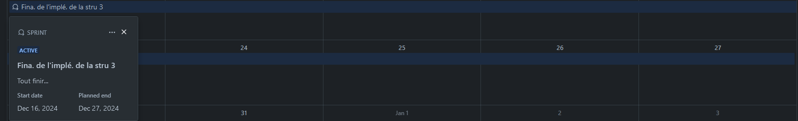
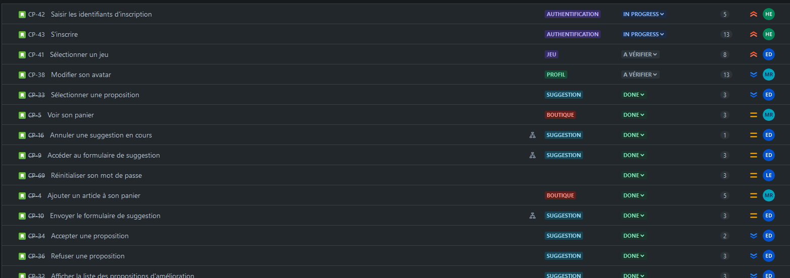
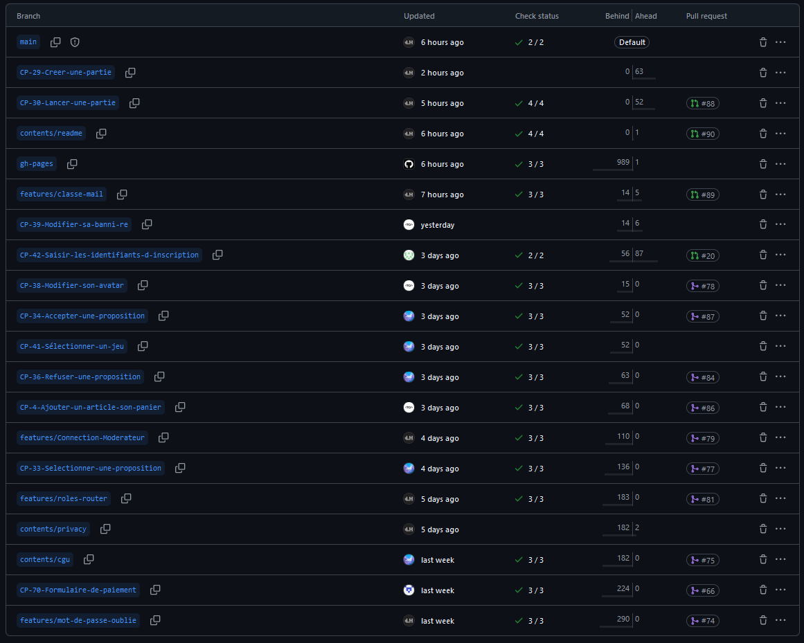
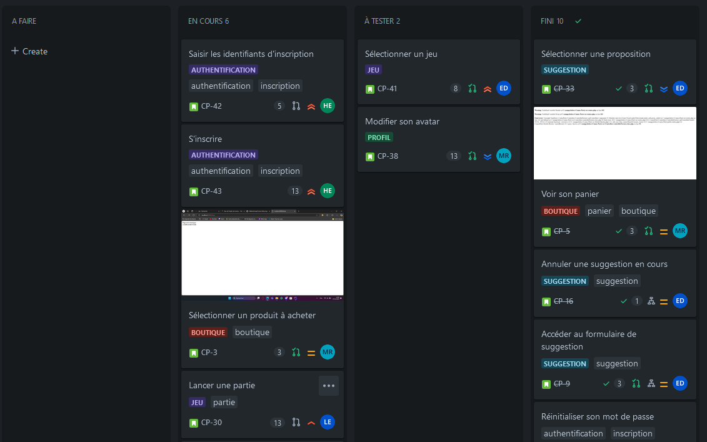
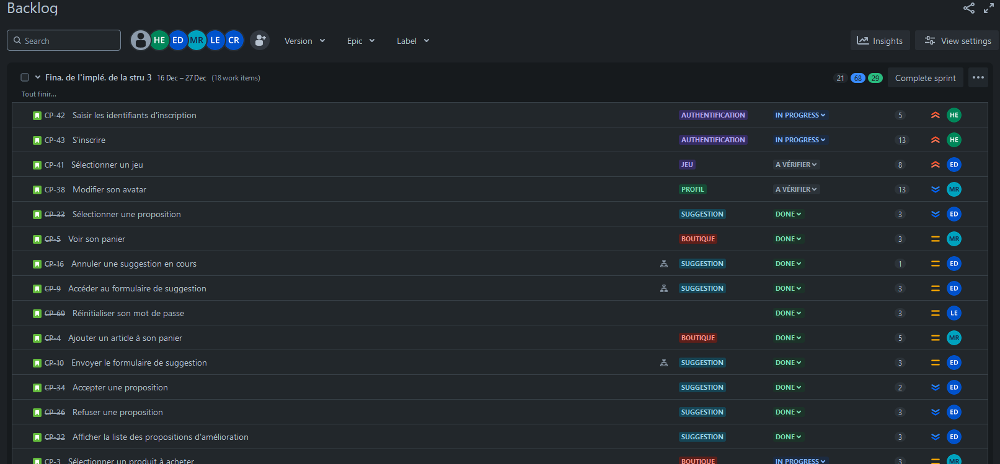
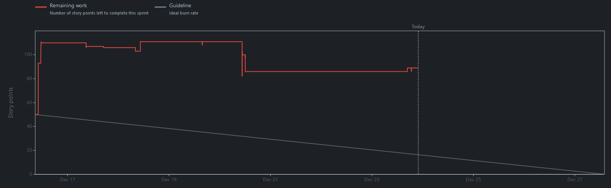
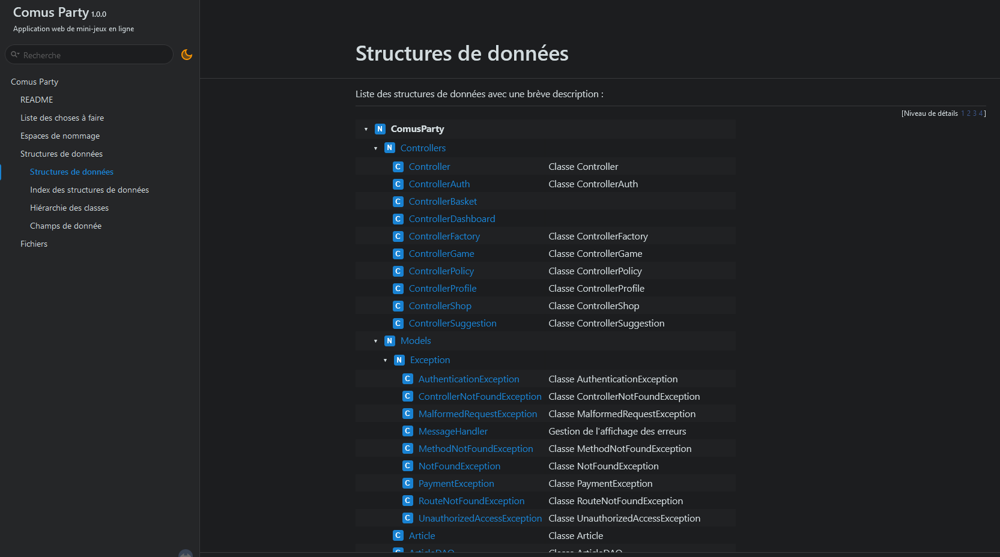

Comus Party est une application web qui offre des mini-jeux en ligne. Bien que je n'aie pas pris part à la conception initiale, j'ai rejoint le groupe en 2de année afin d'apprendre les méthodes agiles et SCRUM ainsi que pour participer au développement de l'application.
Nous avons utilisé les méthods gile, SCRUM et Jira couplé avec GitHub pour gérer le développement de l'application e tdu projet. Nous avons utilisé Jira pour suivre le progrès du projet avec les outils intégrés (gestion des sprints, user stories, tableau kanban, backlog, graphes de progression, etc.) et lié le dépôt GitHub pour gérer les user stories et les branches.






Doxygen a été utilisé pour générer la documentation de l'application.
